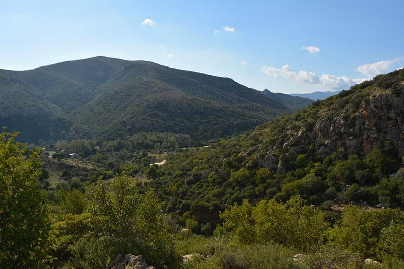
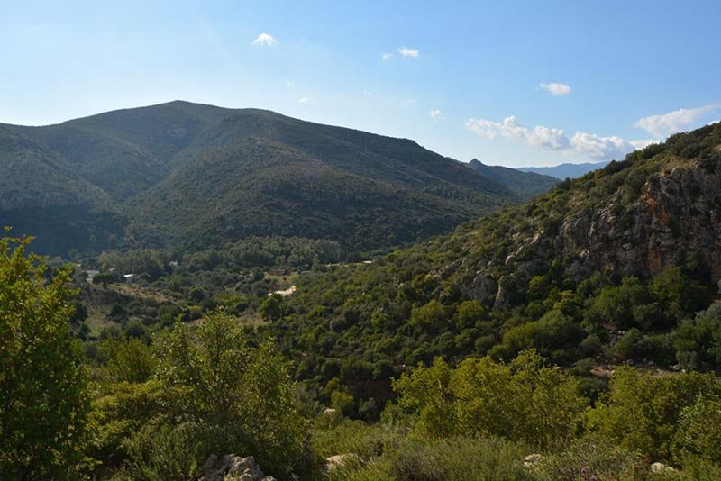
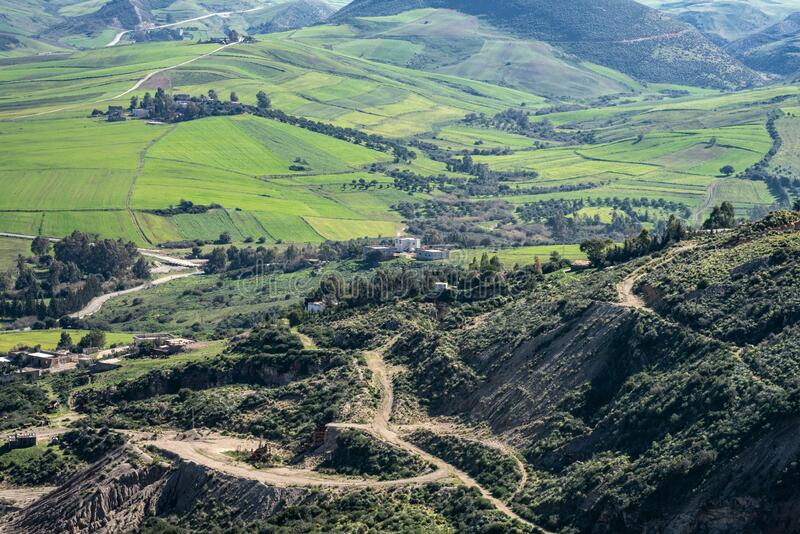
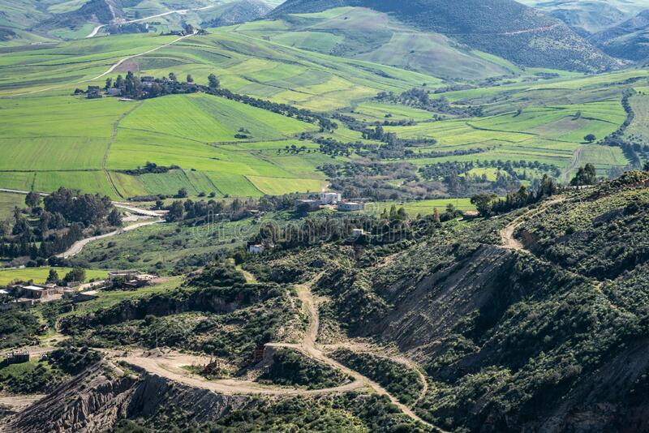

Le gouvernorat de Siliana, créé le 5 juin 1974, est l'un des 24 gouvernorats de la Tunisie. Il est situé dans le nord-ouest du pays et couvre une superficie de 4 642 km2, soit 2,8 % de la superficie du pays. Il abrite en 2014 une population de 223 087 habitants. Son chef-lieu est Siliana.

Lorsque l’Islam s’est répandu en Afrique du Nord au 7ème siècle, de nombreuses factions Amazighs ont tenté de lutter contre cette invasion. Au cours de l’histoire, ils ont résisté dix fois à la progression de l’Islam, en faisant croire qu’ils allaient devenir musulmans. Mais de retour dans leurs villages, ils refusaient de pratiquer cette religion. Intentionnellement, ils ont construit des mosquées blanches bien visibles au sommet des montagnes pour tromper les envahisseurs musulmans. Alors qu’ils passaient, les musulmans, voyant la mosquée, pensaient que le village s’était déjà converti et ils continuaient leur chemin.

Siliana est connue pour ses kilims tissés à la main, ses couvertures en laine ainsi que ses broderies.Sur le plan culinaire, la spécialité locale est préparée à base de mlawi coupé en morceaux et arrosé de sauce tomate et servi avec de la viande.


 

 
